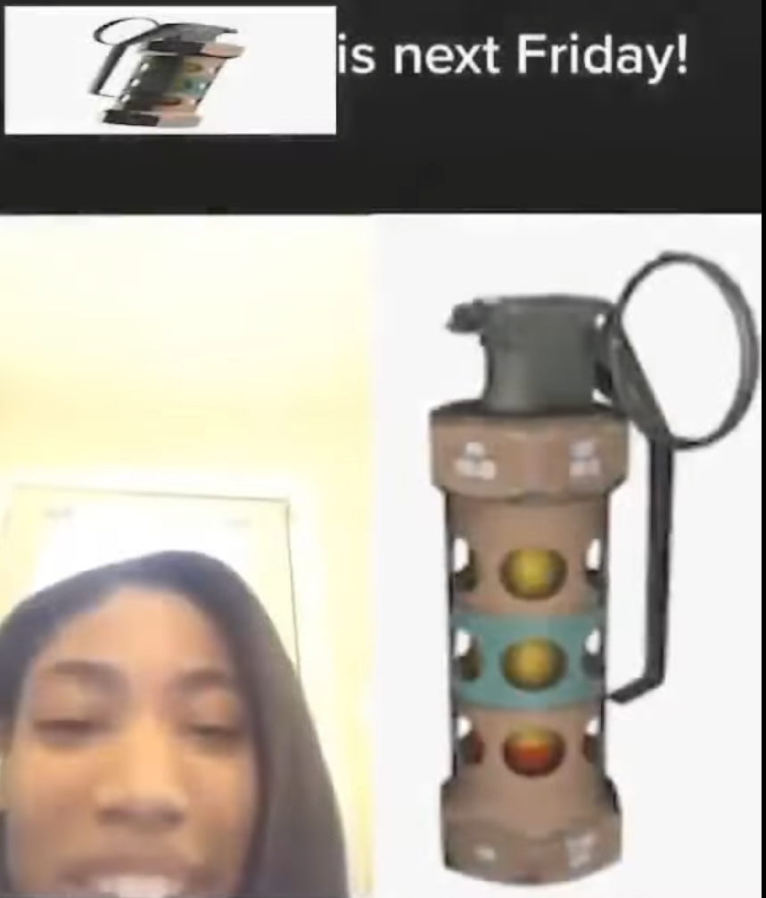

Top 3 Leadership Creeds I used after the summer
1. I will think outside the box. When I was short on ideas or solution I began to consider ideas that are unorthodox, this has surprisingly done me quite well.
2. I will not lie cheat or steal. At first I usually do all 3 as a small joke then fess up shortly after. After pretty much integrating this creed into my daily life it feels bad to even consider trying to as a joke anymore.
3. I believe nothing is hard just a lot of work. Personally this is painfully true from someone who used to terribly procrastinate. I still do to a lesser degree though I'm trying to root it out as much as possible before it becomes a detriment.
Play Me